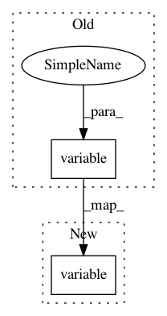

b8ec0e6dc9bc2b069fa9cdb86b8a32ef6a10a6aa,tests/keras/backend/backend_test.py,TestBackend,test_clip_supports_tensor_arguments,#TestBackend#,2082
Before Change
def test_clip_supports_tensor_arguments(self):
// GitHub issue: 11435
x = K.variable([-10., -5., 0., 5., 10.])
min_value = K.variable([-5., -4., 0., 3., 5.])
max_value = K.variable([5., 4., 1., 4., 9.])
assert np.allclose(K.eval(K.clip(x, min_value, max_value)),
After Change
_, x = parse_shape_or_val(shape)
_, min_val = parse_shape_or_val(shape)
max_val = min_val + 1.
x_k = K.variable(x)
min_val_k = K.variable(min_val)
max_val_k = K.variable(max_val)
assert np.allclose(K.eval(K.clip(x_k, min_val_k, max_val_k)),
KNP.eval(KNP.clip(x, min_val, max_val)))
In pattern: SUPERPATTERN
Frequency: 3
Non-data size: 2
Instances
Project Name: keras-team/keras
Commit Name: b8ec0e6dc9bc2b069fa9cdb86b8a32ef6a10a6aa
Time: 2019-03-25
Author: me@taehoonlee.com
File Name: tests/keras/backend/backend_test.py
Class Name: TestBackend
Method Name: test_clip_supports_tensor_arguments
Project Name: keras-team/keras
Commit Name: 632d811f2f65bce1806559bf3eede37e517afb6d
Time: 2018-01-22
Author: me@taehoonlee.com
File Name: tests/keras/backend/backend_test.py
Class Name: TestBackend
Method Name: test_ctc